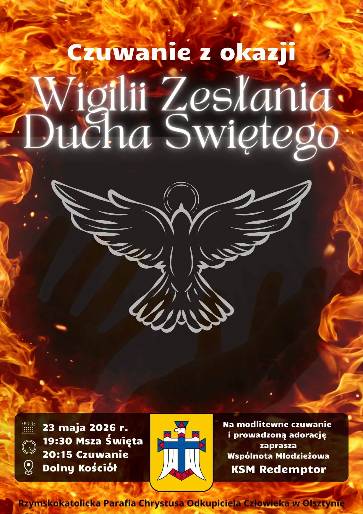
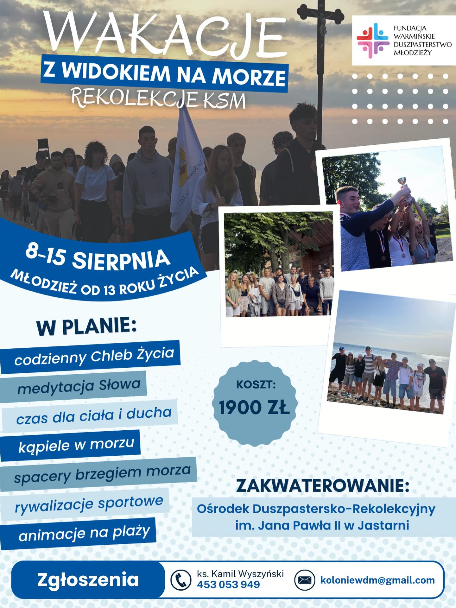
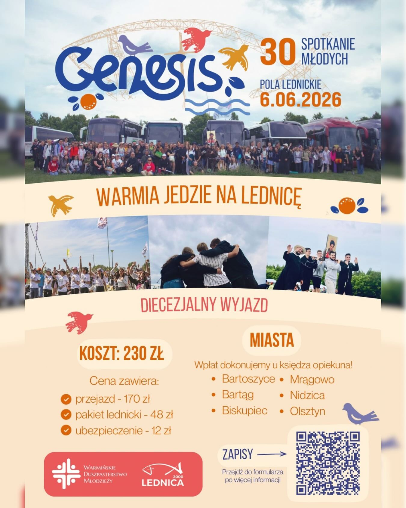
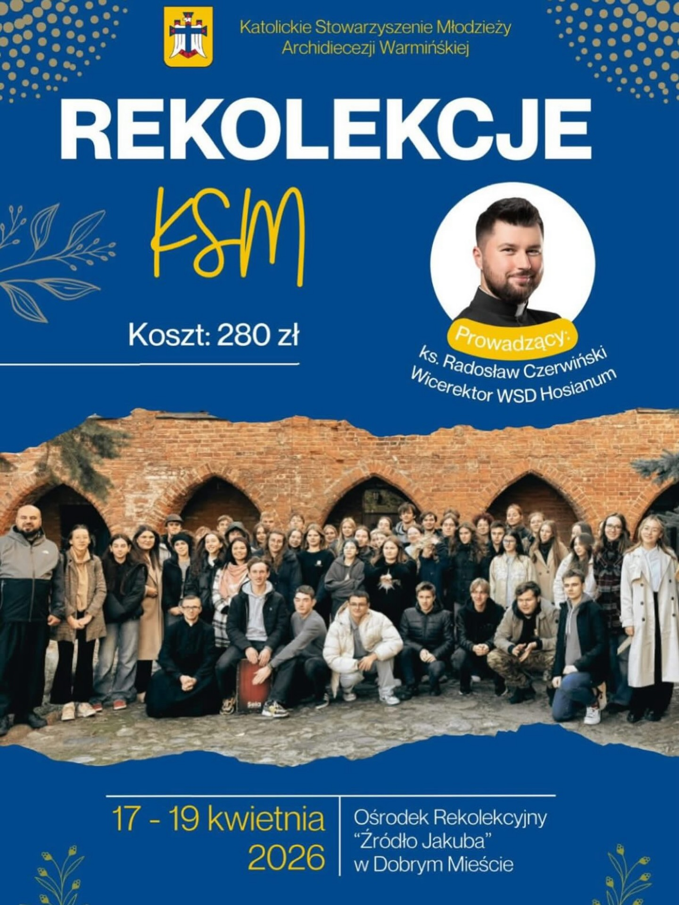

Serdecznie Zapraszamy na wspólne czuwanie na adoracji już 23 Maja , organizowanej przez czlonków KSM Redemptor, wszystkie szczególy na plakacie.

Tak to już 3 edycja Wakacji z Widokiem na morze serdecznie zapraszamy wszystkich zainteresowanych do kontaktu.

Są takie miejsca, w których naprawdę czuć, że nie idziesz przez życie sam. Jednym z nich są Pola Lednickie. Już 6 czerwca 2026 roku młodzież z całej Polski (i nie tylko!) ponownie zjednoczy się pod Bramą-Rybą, aby wspólnie śpiewać, tańczyć, modlić się i dokonać najważniejszego wyboru – wyboru Chrystusa. To wyjątkowe, jubileuszowe 30. spotkanie przeżywać będziemy pod hasłem „GENESIS”. To zaproszenie do powrotu do korzeni: do źródła naszej wiary, do momentu chrztu i do odkrywania na nowo żywej relacji z Bogiem.
Serdecznie Zapraszamy na wspólne czuwanie na adoracji już 23 Maja , organizowanej przez czlonków KSM Redemptor, wszystkie szczególy na plakacie.
Tak to już 3 edycja Wakacji z Widokiem na morze serdecznie zapraszamy wszystkich zainteresowanych do kontaktu.

To byl owocny czas dla naszych uczestników podczas przeżywania swojej wiary w Dobrym Mieście.